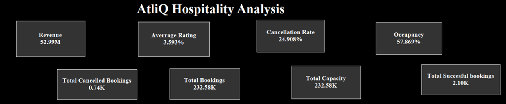
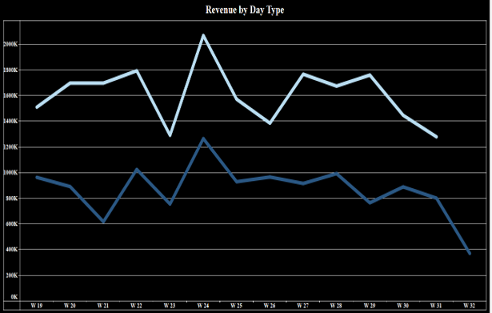
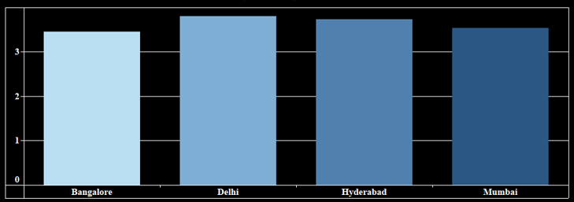
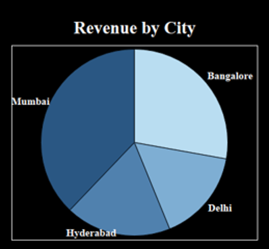
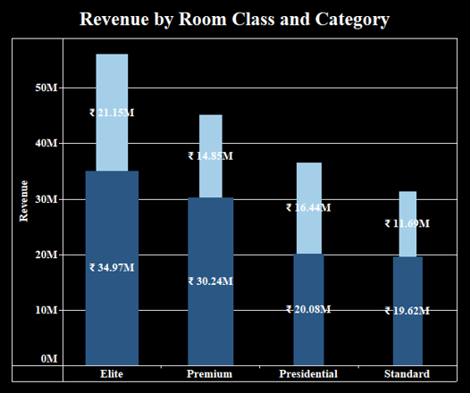
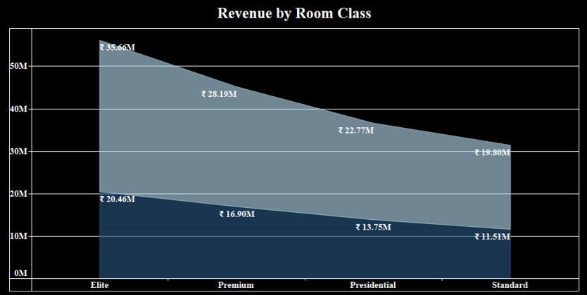
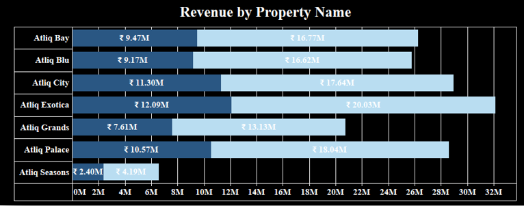
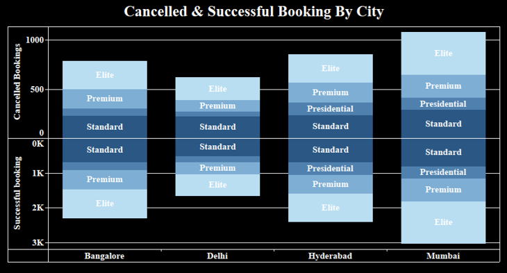

AtliQ Grands, a chain of five-star hotels across India with 20 years in the hospitality industry, has been experiencing a decline in market share and revenue due to competitor strategies and ineffective management decisions. To counteract this, the managing director initiated a strategic move to integrate "Business and Data Intelligence" into their operations. This project, "AtliQ Hospitality Analysis," was undertaken by a third-party service provider to provide crucial insights from historical data, as AtliQ Grands lacks an in-house data analytics team. The project aims to empower AtliQ Grands with data-driven decision-making to regain its market position and boost revenue in the luxury/business hotel category. This data analytics project falls under the "Travel and Tourism" domain and is classified as "Advanced" in difficulty.
Tools Used: Tableau, Excel
My Role: Data Analyst
The core business problem faced by AtliQ Grands was the loss of market share and revenue in the luxury/business hotels category due to competitive pressures and internal decision-making shortcomings. The primary objective of this project was to leverage "Business and Data Intelligence" to address this challenge.
The analysis relied on AtliQ Grands' historical data. While the specific structure and content of the datasets are not fully detailed in the provided documents, it is implied that the data includes:
Overall Sales Metrics (KPI Cards): Displays vital metrics such as Revenue, Average Rating, Cancellation Rate , and Occupancy. Also includes Total Cancelled Bookings , Total Bookings, Total Capacity, and Total Successful Bookings .
Revenue by Day Type: Shows trends in revenue over different weeks, distinguishing between different day types (e.g., weekday vs. weekend revenue patterns). This helps in understanding weekly fluctuations and peak periods.
Average Rating by City: Visualizes the average guest satisfaction rating for each city where AtliQ Grands has properties, enabling comparison of guest experience across locations.
Revenue by City: Illustrates the proportion of total revenue contributed by each city (Bangalore, Delhi, Hyderabad, Mumbai), highlighting top-performing locations.
Revenue by Room Class and Category : Shows revenue generated by different room classes (Elite, Premium, Presidential, Standard) and potentially sub-categories within them, helping to identify which room types are most profitable.
Revenue by Room Class: Provides an overview of revenue distribution across different room classes.
Revenue by Property Name: Displays revenue performance for each individual AtliQ property (e.g., Atliq Bay, Atliq Blu, Atliq City, Atliq Exotica, Atliq Grands, Atliq Palace, Atliq Seasons), facilitating property-level performance evaluation.
Cancelled & Successful Booking By City: Compares cancelled versus successful bookings for different room classes (Elite, Premium, Presidential, Standard) across cities (Bangalore, Delhi, Hyderabad, Mumbai). This is crucial for understanding reasons for revenue loss and optimizing booking strategies.
| Project Title | AtliQ Hospitality Analysis |
| Tools Used | Tableau, Excel |
| My Role | Data Analyst |
| Business Problem | Loss of market share & revenue |
| Objective | Use data insights to regain market leadership |
| Dataset(s) | Historical hotel performance and bookings |
| Key Metrics | Revenue, Rating, Occupancy, Cancellations |
| Approach | ETL, KPI, Dashboarding, Insights |
| Insights | Revenue drivers, cancellation impact, room class strategy |
| Learning Outcomes | Domain expertise, visualization, KPI handling |